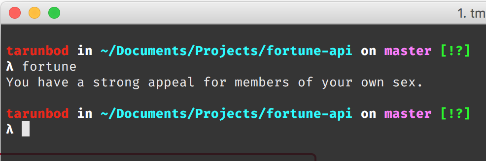

This API provides a REST interface to the fortunes one would normally see from the command-line fortune command.
Note this is a WIP!
All API calls are made to the base URL https://fortune-api.herokuapp.com/api
Returns a random fortune, optionally from a specific category.
Sample Response:
{
"success": true,
"fortune": "You have a strong appeal for members of your own sex."
} Returns a list of all available fortune categories.
Response will be as follows:
{
"categories": [
"computers",
"cookie",
"definitions",
"drugs",
"education",
"ethnic",
"fortunes",
"goedel",
"humorists",
"kids",
"law",
"linuxcookie",
"literature",
"love",
"magic",
"medicine",
"men-women",
"miscellaneous",
"news",
"people",
"pets",
"platitudes",
"politics",
"riddles",
"science",
"songs-poems",
"sports",
"startrek",
"translate-me",
"wisdom",
"work",
"zippy"
]
}
You can view the code for, star, and/or fork this repository here.